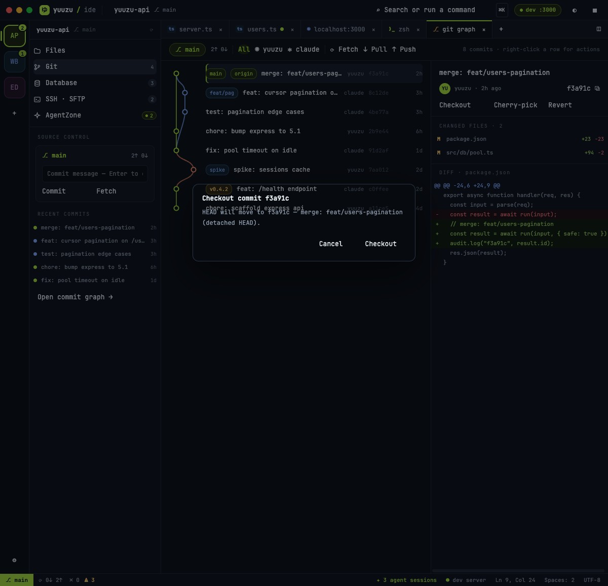

Change Report · Co-Learning
Yuuzu IDE v2 — 功能完整化:editor 寫入、DB 查詢、SFTP、git 操作、settings、browser
14
變更檔案
418
tests 全綠(+16)
7
功能域接線
2
驗證期抓到的 bug
① What — 這輪把哪些 demo 功能換成真實後端
- 編輯器可編輯 + ⌘S 儲存:真檔案 tab 改為「透明 textarea 疊在語法高亮層上」的編輯面,dirty 追蹤、儲存中狀態、
write_text_file帶expectedVersion做磁碟版本衝突偵測。 - DB Data grid / SQL console:開表自動跑
SELECT * … LIMIT(設定值);SQL 視圖是可編輯 console(⌘⏎ 執行);mutation/destructive 語句被後端拒絕時自動彈確認框,帶RUN MUTATION/RUN DESTRUCTIVE SQL重跑;Structure 視圖顯示 schema inspect 的真欄位;Export 走export_database_query_result。 - SFTP 真會話:
connect_remote_host→ 雙 pane 真列表(local=workspace 掃描、remote=list_sftp_directory)、雙擊進目錄、「..」上層、⌘C/⌘V 與拖曳觸發upload/download_sftp_file、本地刪除(確認後)。 - Git 操作:commit detail 的 Checkout / Cherry-pick / Revert 與右鍵選單接真指令(checkout、revert 先過確認框);graph header 新增 ⟳ Fetch / ↓ Pull / ↑ Push;side panel Fetch 同步;Copy hash 寫進系統剪貼簿。
- Settings 持久化:所有設定值寫入 localStorage 跨啟動還原;fontSize → 編輯器/終端字級即時套用;tokenChip 開關 Σ chip;cursor blink 開關。
- Status bar 真值:⟳ behind↓ ahead↑ 來自 git status、Ln/Col 來自編輯器游標、Spaces 跟 tabSize 設定、語言由副檔名推導;demo 專屬的假數字(✗0 ⚠3、dev server)在 real mode 隱藏。
- Browser tab:可編輯網址列 →
browser_validate_url(僅 http loopback)→ iframe 載入 dev server;⟳ 重載、錯誤顯示。 - 確認框系統:新增全域
ConfirmModal(Esc 可關),所有危險操作(checkout/revert/刪檔/危險 SQL)統一經過它。
② 檔案變更表(How)
| 檔案 | 類型 | 變更 | 工具 |
|---|---|---|---|
| src/v2/v2-model.ts | MOD | Tab 擴充(version/savedContent/sql/grid/urlInput…)、DbGrid/DbCol 型別、sizeLabel/langLabel/buildSelect | Edit |
| src/v2/bridge.ts | MOD | mapQueryResult、confirmationFromError、mapRemoteEntries/mapLocalEntries、parentPath、mapDbTables 帶欄位 | Edit |
| src/v2/v2-store.ts | MOD | RealDelegate +15 方法;confirm/cursor state;editor/db/sftp/git/browser actions;settings localStorage | Edit |
| src/v2/controller.ts | MOD | delegate 實作:saveFile、dbRun(確認重跑)、dbExport、sftpOpen/Enter/Transfer/Delete、gitCheckout/CherryPick/Revert/Sync、browserGo、termKill;fix: openFile 存 version+savedContent;fix: ensureConnections 自動 inspect 展開中的連線 | Edit |
| src/v2/ContentViews.tsx | MOD | EditableBody(textarea 疊層編輯器、Tab 縮排、⌘S、游標回報);BrowserView real 模式(URL 列+iframe) | Edit |
| src/v2/DbTableView.tsx | MOD | RealGrid(動態欄、NULL 標示、錯誤/執行中態)、RealStructure、可編輯 SQL console;demo 路徑原樣保留 | Write |
| src/v2/SftpView.tsx | MOD | 連線狀態 chip、「..」導覽列、雙擊進目錄、loading/空目錄狀態 | Write |
| src/v2/GitGraphView.tsx | MOD | Fetch/Pull/Push 按鈕;Checkout/Cherry-pick/Revert/Copy hash 接 store 真 actions | Edit |
| src/v2/Overlays.tsx | MOD | ConfirmModal;commit/term/dbconn/sftp 右鍵選單真實化(kill via SIGTERM、clear via form-feed) | Edit |
| src/v2/Workbench.tsx | MOD | StatusBar 真值與 demo 元素隱藏;⌘S 全域快捷鍵;Esc 關 confirm;fontSize/blink 設定套用;dev badge 限 demo | Edit |
| src/v2/SidePanel.tsx | MOD | GitBody Fetch → gitSync("fetch") | Edit |
| src/v2/yuzu.css | MOD | 編輯器疊層樣式、--yz2-ed-fs 字級變數、url-input、browser-frame、sql console、confirm modal、btn-danger | Edit/Bash |
| src/v2/{bridge,v2-store,v2-model}.test.ts | TEST | +16 tests:sftp/query 映射、confirmation 解析、dirty 流程、settings 持久化、confirm modal、clip idx | Edit |
③ Why — 設計取捨
- textarea 疊層而非引入 Monaco/CodeMirror:零依賴、與 Yuzu 設計的行高/字體完全一致;>3000 行自動退回純文字高亮,效能可控。語法高亮沿用設計稿的 hlLine。
- DB 確認流程交給後端分類:前端不自己猜 SQL 危險性 — 直接執行,後端拒絕時從錯誤訊息取出官方確認字串(
requires confirmation text: …)再彈框,與 Rust 端單一事實來源對齊。 - git checkout/revert 的確認字串由 Rust 源碼確認:
CHECKOUT {name}與REVERT {short},在 UI 確認框後由 controller 組裝,不讓使用者打字。 - Browser 用 iframe 而非 v1 的螢幕截圖:後端
browser_validate_url本就限 http loopback,dev server 預覽在 dev 模式(http origin)下 iframe 可直接互動,比截圖預覽強;打包版(tauri:// origin)若被 mixed-content 擋下會顯示錯誤訊息,留待後續評估 proxy。 - Settings 用 localStorage:後端
AppSettings結構是固定欄位(density/theme/accent…),塞不下 v2 的 22 個鍵;localStorage 在 WKWebView 持久且零風險。視覺型設定(fontSize/tokenChip/blink/theme)即時套用,其餘先儲存。
④ Architecture — 資料流
⑤ 驗證(runtime observation)
PASS418/418 tests(+16 新增)· tsc 乾淨 · vite build 成功
PASSDemo 迴歸:Playwright 驅動 vite(瀏覽器),v2 介面、git graph、confirm modal、status bar 正常
PASSReal-mode 前端全鏈:以 mock
__TAURI_INTERNALS__(攔截 invoke、可斷言參數)在 Playwright 驅動PENDINGNative 真後端最終確認:驗證進行中螢幕被鎖定(凌晨),視窗截圖不可得;fixtures 已備妥(見⑥)
Real-mode mock-IPC 驗證明細(每項都含 IPC 參數斷言)
- ✅ bootstrap:registry→rail、branch=main、explorer dirs-first、badges、status bar「⟳ 0↓ 1↑」、demo 元素隱藏
- ✅ 編輯器:打字→dirty chip「● unsaved · ⌘S」→ Ln/Col 即時 → ⌘S →
write_text_file(content, expectedVersion={modified_ms:1,len:56})→ dirty 清除 - 🔍 抓到 bug#1:首次儲存 expectedVersion=null — openFile 漏存 version/savedContent → 已修+重驗
- ✅ Git:checkout confirm →「CHECKOUT c3c3…(fullhash)」、revert danger 紅鈕 →「REVERT c3c3c3c(short)」、push → git_push、之後自動 reloadGit(status+log+detail)
- ✅ DB:開表自動 SELECT(grid 動態欄位、NULL 灰顯、3 rows · 7ms);SQL console 改 DELETE → Run → 後端拒 → confirm「RUN MUTATION」→ 重跑帶 confirmation → 「1 rows affected」
- 🔍 抓到 bug#2:DB 連線初始展開但 schema 不載入(要收合再展開)→ ensureConnections 自動 inspect → 已修+重驗
- ✅ SFTP:connect→「SSH · connected」、雙 pane 真列表、雙擊 releases/ 進入、「..」返回、⌘C/⌘V →
download_sftp_file(remotePath=/var/www/deploy.sh, localRelativePath=deploy.sh) - ✅ Browser:輸入 localhost:5173/app → validate → iframe src=http://localhost:5173/app、tab 標題 localhost:5173
- ✅ Settings:fontSize 16 → --yz2-ed-fs 即時 16px → reload 後仍 16px(localStorage)
- 🔍 probe:SQL 無確認直接執行 mutation → 正確被擋;貼上到同 pane → 拒絕提示;空 URL → 「Type a URL first」
截圖

⑥ 待辦與測試夾具(下次接續)
- Native 最終驗證(解鎖螢幕後):tauri dev 已在跑;workspace「v2-lab」(/tmp/v2-lab,3 commits + origin=/tmp/v2-lab-remote.git)、DB profile「lab.db」(SQLite,5 users)、SSH host「loopback」已種好。驗:編輯檔案⌘S→磁碟、users 表查詢、Push→bare repo、SFTP loopback。
- SSH loopback key 已移除(安全):重建→
cp ~/.ssh/id_ed25519.pub ~/.ssh/authorized_keys && chmod 600 ~/.ssh/authorized_keys;驗完rm ~/.ssh/authorized_keys。 - 還原 fixtures:workspace-registry 備份在
/tmp/workspace-registry.backup.json;app 資料夾的 database-profiles.json / remote-hosts.json 為測試種子,不需要時可刪。 - 尚未接線(本輪範圍外):remote 端刪除/改名、branch-from-commit(後端無此指令)、editor 多游標/搜尋、diagnostics 計數、demo 編輯寫回。